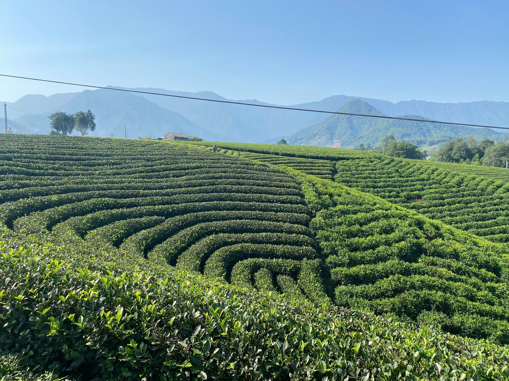
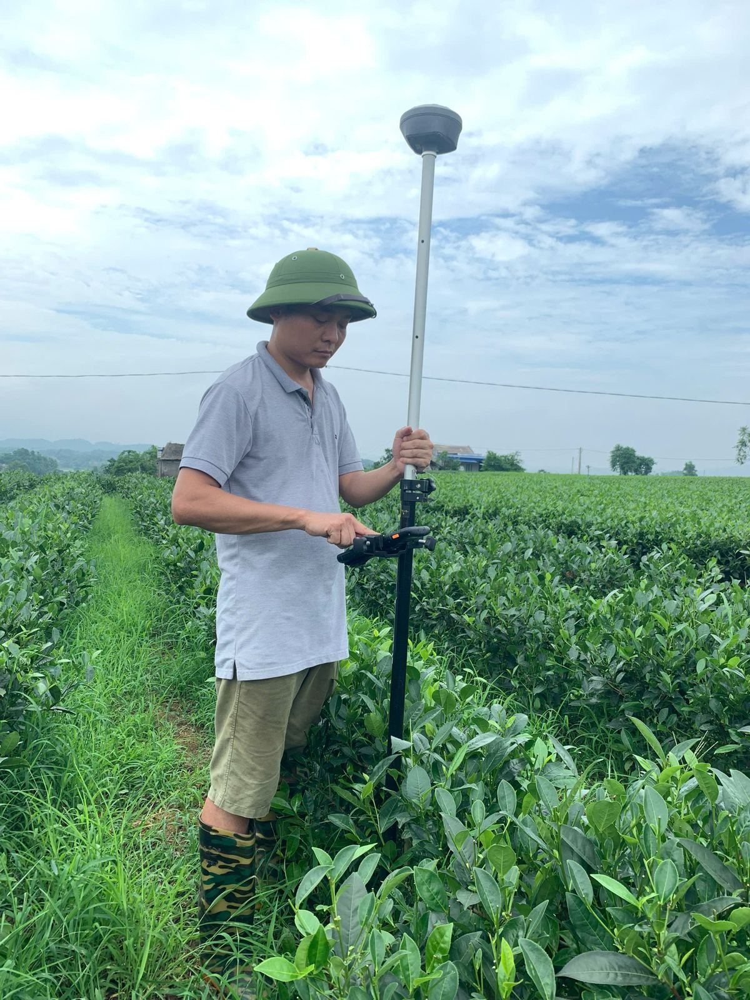
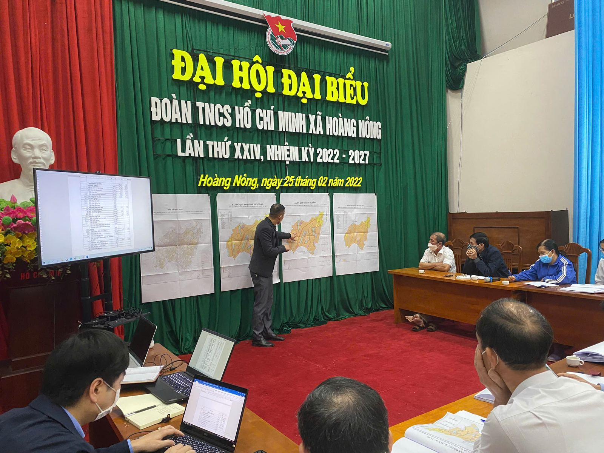

Quy hoạch chi tiết
Quy hoạch vùng sản xuất chè tập trung gắn với phát triển du lịch
Xã Hoàng Nông, xã La Bằng và xã Phú Xuyên, huyện Đại Từ, tỉnh Thái Nguyên.
Khảo sát hiện trạng bằng đo đạc GNSS, xây dựng bản đồ quy hoạch sử dụng đất và hạ tầng, làm việc với chính quyền xã để gắn vùng chè tập trung với định hướng phát triển du lịch địa phương.


